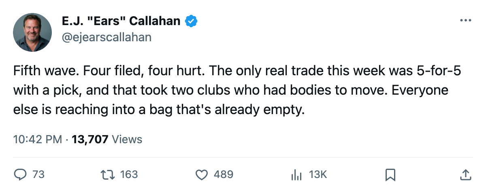
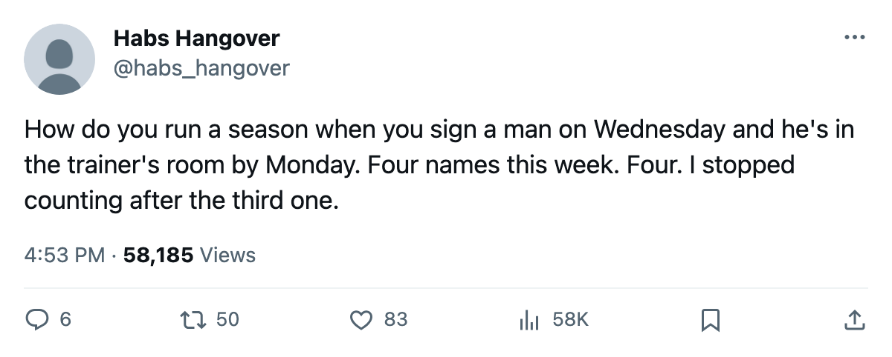

RUMOR METER: Sign-and-Injure, Round 5. 4 Filed Oct 15-16. All 4 on IR. 🔥🔥🔥
Bouwmeester, Gamache, Slaney, Havelid. The fifth wave since opening night. The pool reads 0 names.
 E.J. "Ears" CallahanInsider · The Hot Stove
E.J. "Ears" CallahanInsider · The Hot Stove
Sign-and-Injure, Round 5
 Jay Bouwmeester83 signed with
Jay Bouwmeester83 signed with  Florida Panthers on 2005-10-15 for $367,170. The league placed him on the injured list with an elbow, onset between 2005-10-18 and 2005-10-20, return 2005-10-22.
Florida Panthers on 2005-10-15 for $367,170. The league placed him on the injured list with an elbow, onset between 2005-10-18 and 2005-10-20, return 2005-10-22.
Simon Gamache70 signed with  Washington Capitals on 2005-10-15 for $2,140. A rib. IR through 2005-10-28.
Washington Capitals on 2005-10-15 for $2,140. A rib. IR through 2005-10-28.
 John Slaney70 signed with
John Slaney70 signed with  Philadelphia Flyers on 2005-10-15 for $197,400. A groin. IR through 2005-11-13.
Philadelphia Flyers on 2005-10-15 for $197,400. A groin. IR through 2005-11-13.
 Niclas Havelid73 signed with
Niclas Havelid73 signed with  Mighty Ducks of Anaheim on 2005-10-16 for $273,980. A shoulder. IR through 2005-10-24.
Mighty Ducks of Anaheim on 2005-10-16 for $273,980. A shoulder. IR through 2005-10-24.
Four contracts. Four signings. Four injuries. The filing window is 2 days. This is the fifth wave since the season opened on 2005-10-04.
The pool is still 0
Thirty clubs carry full rosters. The free-agent list reads 0 names. The only deal that moved a contract between balance sheets this week is the CONFIRMED 5-player, 1-pick swap between  Colorado Avalanche and
Colorado Avalanche and  Tampa Bay Lightning filed on 2005-10-15. Outside that trade, the market is a cycle: a club reaches for the cheapest available body, the body lands on IR, the club is back at the starting line.
Tampa Bay Lightning filed on 2005-10-15. Outside that trade, the market is a cycle: a club reaches for the cheapest available body, the body lands on IR, the club is back at the starting line.
| player | team | filed | salary | body part | return |
|---|---|---|---|---|---|
| [[player:327\|Bouwmeester]] | Florida Panthers | Oct 15 | $367,170 | elbow | Oct 22 |
| [[player:1189\|Gamache]] | Washington Capitals | Oct 15 | $2,140 | rib | Oct 28 |
| [[player:922\|Slaney]] | Philadelphia Flyers | Oct 15 | $197,400 | groin | Nov 13 |
| [[player:372\|Havelid]] | Mighty Ducks of Anaheim | Oct 16 | $273,980 | shoulder | Oct 24 |
The Washington Capitals filing at $2,140 is the cheapest contract in the league. Gamache's return is 2005-10-28. The Philadelphia Flyers groin keeps Slaney out until 2005-11-13, the farthest-out date of the four.
Sources: nobody is running a scheme
League sources in four buildings don't see a coordinated play. What keeps repeating is structural: a roster has a hole, the club signs the cheapest name left, the name hurts. With 0 unsigned players, the cheapest name left is a two-way deal or a one-day contract. The Florida Panthers elbow clears in 2 days. The Colorado Avalanche-Tampa Bay Lightning swap moves bodies that play tonight.
The league designates the body part. The cause is not on record.

